|
4-4-2
|
Canada | 1 | - | 1 | Bosnia-Herzegovina |
4-4-2
|
| HT 0-1 | ||||||
|
FIFA World CupFriday 12 June 2026
|
||||||
- Venue
- Toronto Stadium
- Referee
- Facundo Raúl Tello Figueroa
Yellow card11'
A. Johnston
Yellow card53'
L. De Fougerolles
- 3
Substitution61'
L. Millar
J. Shaffelburg
J. David
P. David
T. Buchanan
A. Ahmed
Substitution76'
T. Oluwaseyi
C. Larin
Goal78'
C. Larin
Assist: P. David
Substitution90+1'
S. Eustaquio
J. Osorio
Whistle45+4'
45+4'
Goal21'
J. Lukić
Assist: S. Kolašinac
Yellow card45'
E. Demirović
Yellow card45+1'
J. Lukić
- 2
Substitution62'
J. Lukić
S. Baždar
I. Bašić
A. Gigović
- 2
Substitution74'
E. Bajraktarević
I. Šunjić
A. Memić
K. Alajbegović
Substitution84'
S. Kolašinac
D. Burnić
Yellow card90+3'
N. Katić
Canada | |
|---|---|
Goalkeeper | |
| 16 | M. Crépeau |
Defender | |
| 2 | A. Johnston 11' |
| 4 | L. De Fougerolles 53' |
| 13 | D. Cornelius |
| 22 | R. Laryea |
Midfielder | |
| 7 | S. Eustaquio 90+1' |
| 8 | I. Koné |
| 11 | L. Millar 61' |
| 17 | T. Buchanan 61' |
Forward | |
| 10 | J. David 61' |
| 12 | T. Oluwaseyi 76' |
Substitutes | |
| 9 | C. Larin 76'78' |
| 14 | J. Shaffelburg 61' |
| 20 | A. Ahmed 61' |
| 21 | J. Osorio 90+1' |
| 24 | P. David 61' |
Bosnia-Herzegovina | |
Goalkeeper | |
| 1 | N. Vasilj |
Defender | |
| 4 | T. Muharemović |
| 5 | S. Kolašinac 84' |
| 7 | A. Dedić |
| 18 | N. Katić 90+3' |
Midfielder | |
| 6 | B. Tahirović |
| 13 | I. Bašić 62' |
| 15 | A. Memić 74' |
| 20 | E. Bajraktarević 74' |
Forward | |
| 10 | E. Demirović 45' |
| 25 | J. Lukić 21'45+1'62' |
Substitutes | |
| 8 | A. Gigović 62' |
| 9 | S. Baždar 62' |
| 14 | I. Šunjić 74' |
| 17 | D. Burnić 84' |
| 19 | K. Alajbegović 74' |


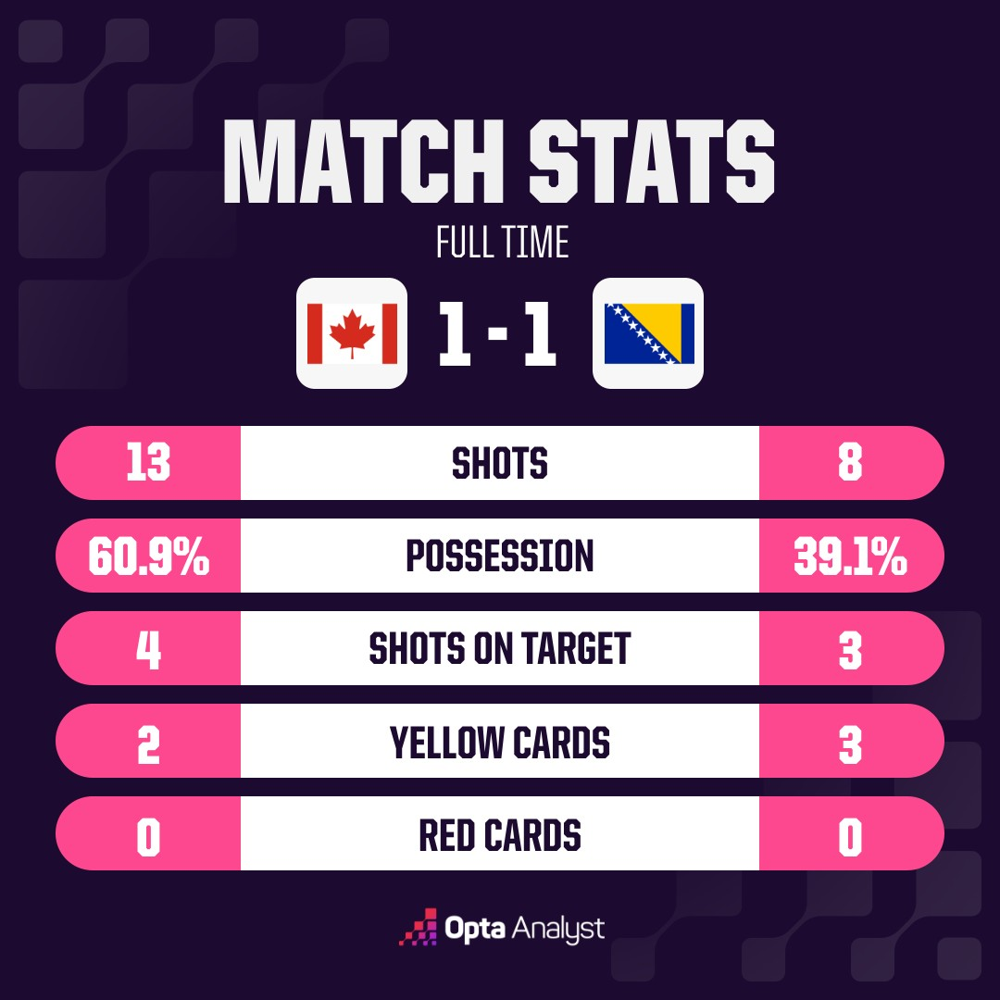
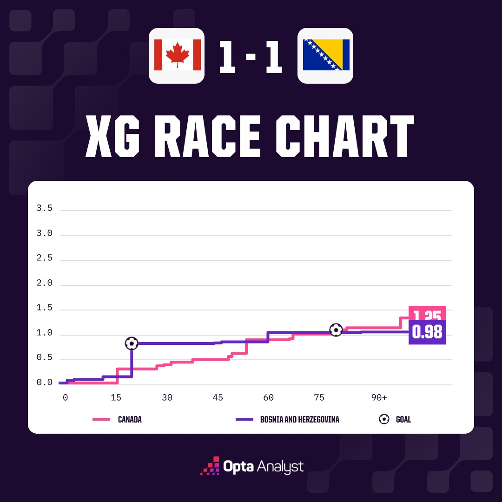
98'
Canada have failed to win in their last 7 games in the FIFA World Cup, their longest winless streak in the competition (since at least 1965/1966).
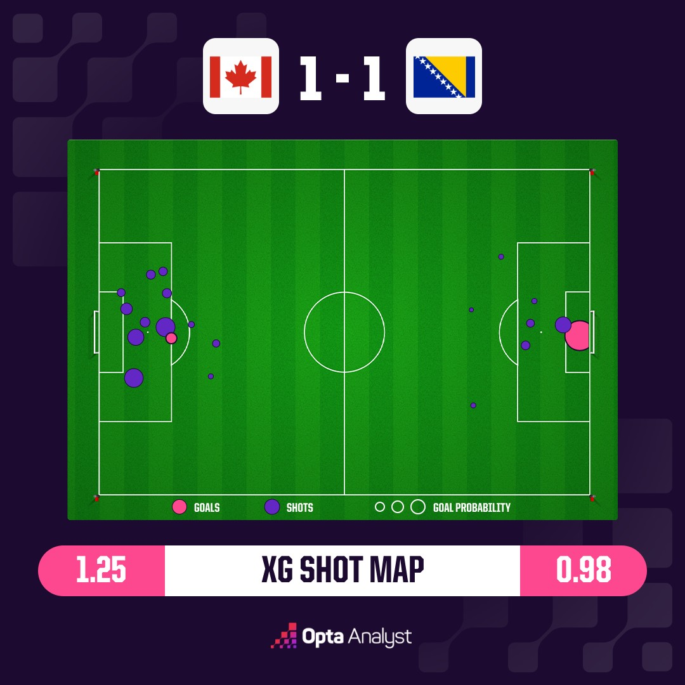
90+7'
That's it! The referee blows the whistle and we have reached full-time. The final score at Toronto Stadium is Canada 1-1 Bosnia.
90+6'
Shot blocked! Cyle Larin unleashes an attempt at goal, but the ball does not reach its target thanks to Tarik Muharemović, who makes a solid block to stem the danger – for now.
90+5'
This game is certainly in a bit of a lull now, with neither team having had an attempt at goal in the past 10 minutes. It could do with something to spark it into life. Canada have had more possession during the quiet spell, but are yet to do much with it.
90+3'
Yellow card! Nikola Katić will have to be careful from now on after they are cautioned.
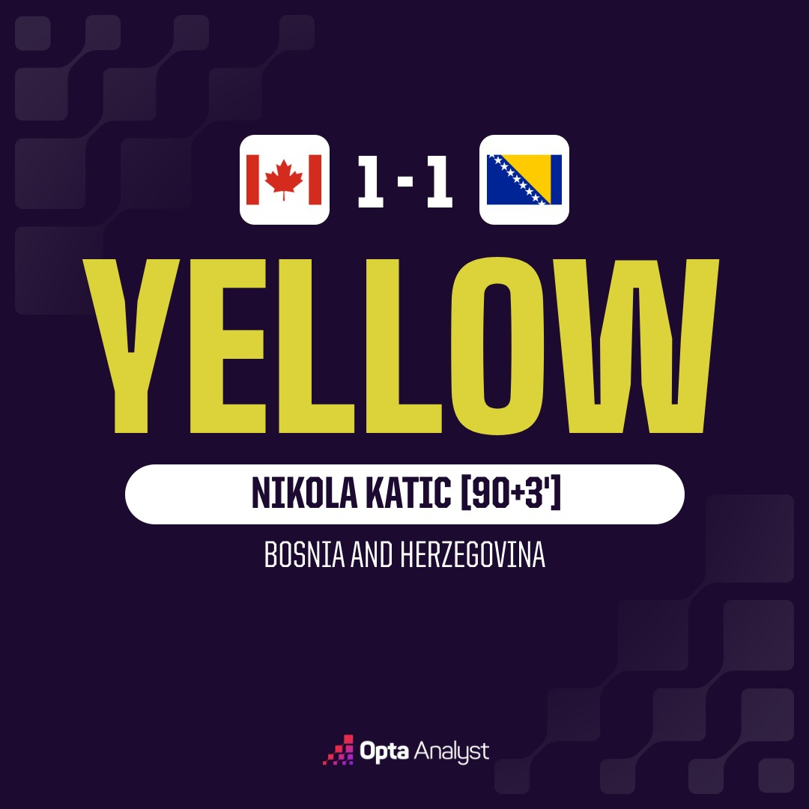
90+3'
A rash challenge from Nikola Katić, who sends Cyle Larin tumbling, giving Canada a free-kick. It is not in a threatening position, but it gives them a chance to get back on the ball.
90+2'
Free-kick! A foul from Promise David on Tarik Muharemović. It is well away from Canada’s goal, so it is unlikely to result in a chance for Bosnia.
90+1'
Substitution! Jonathan Osorio replaces Stephen Eustaquio for Canada as the manager shuffles the pack. Can Jonathan Osorio make an impression as this match continues?
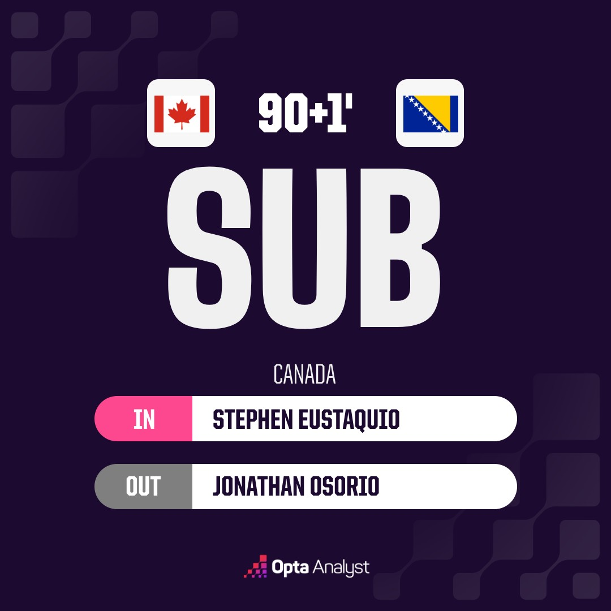
90+1'
The pressure is starting to build. Canada with a cluster of set-pieces as they look to make it count.
90+1'
A foul from Ivan Šunjić on Stephen Eustaquio sees Canada win a free-kick, but it is not in a dangerous position, so Bosnia should be confident they can defend it easily enough.
89'
A free-kick to Canada, as Ermedin Demirović goes in and fouls Ismaël Koné. However, Bosnia will not mind giving one away in this area too much, with plenty of distance to their goal.
88'
Ivan Šunjić goes in on Promise David and concedes a foul. The free-kick is not in a particularly dangerous area from Bosnia’s viewpoint, though.
84'
That is bad news for Bosnia, as they suffer an injury blow, with Sead Kolašinac having had to receive treatment before then making their way off the pitch. Dzenis Burnić is coming on.
81'
MISS! The score remains 1-1, with Bosnia relieved after Canada’s Promise David goes for goal but sends their attempt off target. Not one to write home about, that one.
78'
We are level! It’s all square after Cyle Larin finishes from inside the area. It’s Canada 1-1 Bosnia – will either team go onto win it now? It’s all to play for in the final stages.
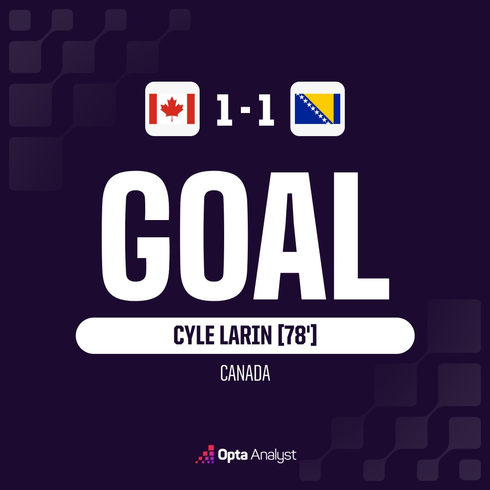
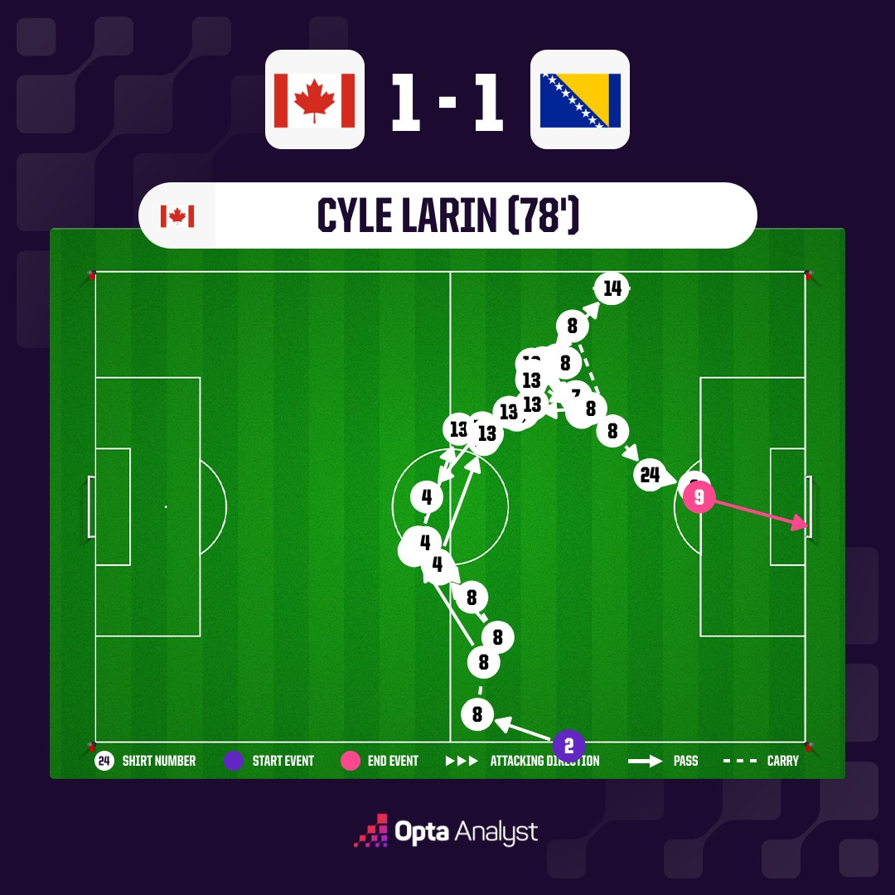
77'
A free-kick to Canada, as Kerim Alajbegović goes in and fouls Alistair Johnston. However, Bosnia will not mind giving one away in this area too much, with plenty of distance to their goal.
77'
Not much goalmouth action to speak of in this period of the game, with no attempts made from either side. This game could spark at any moment, however. It is Bosnia who have had more of the ball, controlling 61 per cent possession in the last 10 minutes.
76'
The Canada manager is looking to the substitutes’ bench, bringing on Cyle Larin in place of Tani Oluwaseyi. Will the change make a difference? Let’s find out!
76'
Entering the final stages of this contest, let’s check on the possession stats for each team. It is Canada who have had the more of the ball, with 63.21%, while Bosnia have had to settle for 36.79%. The score is 0-1.
75'
It's all hands on deck for Bosnia as they defend their lead, making a wave of critical blocks and clearances
74'
A substitution for Bosnia sees Amar Memić replaced by Kerim Alajbegović. There does not appear to be any obvious sign of an injury, so that is a tactical switch.
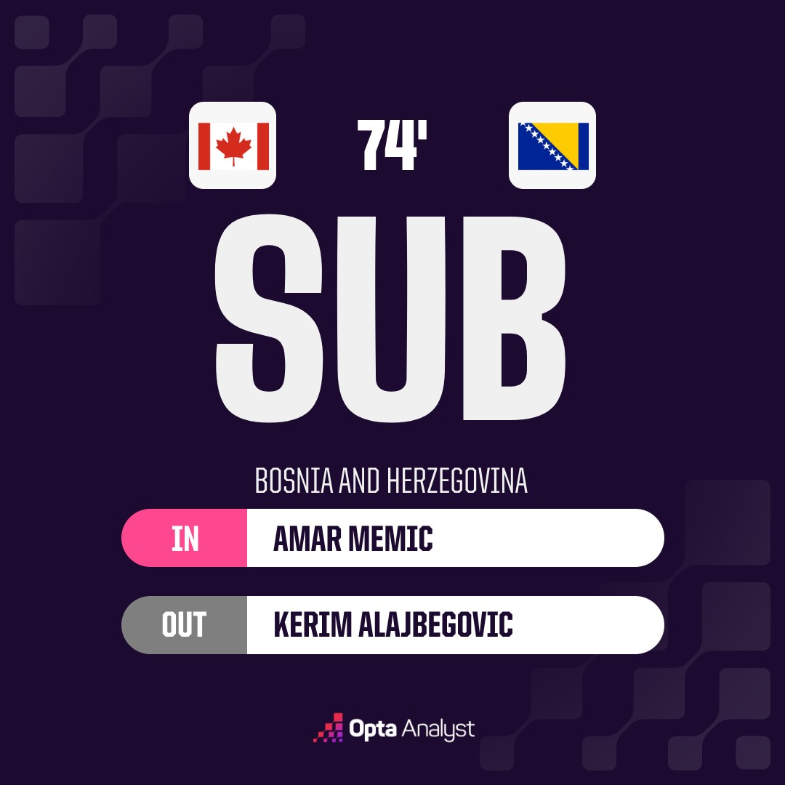
74'
Substitution! Ivan Šunjić replaces Esmir Bajraktarević for Bosnia as the manager shuffles the pack. Can Ivan Šunjić make an impression as this match continues?
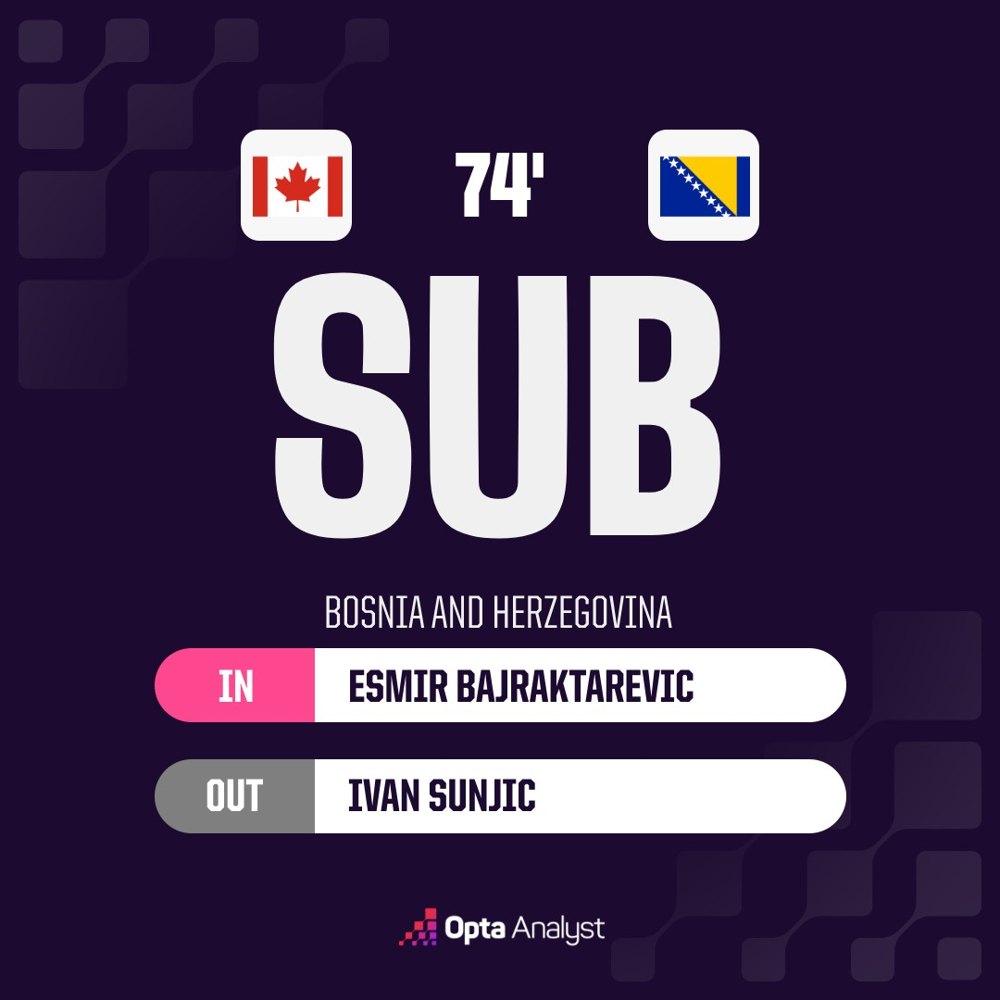
74'
A rash challenge from Sead Kolašinac, who sends Stephen Eustaquio tumbling, giving Canada a free-kick. It is not in a threatening position, but it gives them a chance to get back on the ball.
73'
Free-kick! A foul from Ismaël Koné on Samed Baždar. It is well away from Canada’s goal, so it is unlikely to result in a chance for Bosnia.
69'
Luc De Fougerolles goes in on Sead Kolašinac and concedes a foul. The free-kick is not in a particularly dangerous area from Canada’s viewpoint, though.
69'
It's all hands on deck for Bosnia as they defend their lead, making a wave of critical blocks and clearances
68'
Can Canada make this chance count? They have won a free-kick in a threatening position after a foul from Sead Kolašinac on Tani Oluwaseyi. Will Bosnia's defence be tested here?
67'
Free-kick! A foul from Samed Baždar on Luc De Fougerolles. It is well away from Bosnia’s goal, so it is unlikely to result in a chance for Canada.
66'
BLOCKED, AND A CERTAIN GOAL SAVED! Tani Oluwaseyi's effort was heading in, but on the line, a player is perfectly placed to make a vital clearance. Fantastic defending from the Bosnia player.
66'
Just over an hour played, so let’s check on the shot count for each side. Bosnia have had 7, getting 3 of those on target. Canada, meanwhile, have had 2 efforts on target, and 9 overall.
65'
No luck! Stephen Eustaquio takes on a shot that, had they got it right, might have been set to test the goalkeeper, but instead it is sent off target and Bosnia come away unscathed.
64'
It’s backs to the wall now — Bosnia throwing everything into defending their advantage, with a flurry of crucial interventions.
63'
Free-kick! A foul from Promise David on Armin Gigović. It is well away from Canada’s goal, so it is unlikely to result in a chance for Bosnia.
62'
A free-kick to Canada, as Esmir Bajraktarević goes in and fouls Richie Laryea. However, Bosnia will not mind giving one away in this area too much, with plenty of distance to their goal.
62'
Substitution! Armin Gigović replaces Ivan Bašić for Bosnia as the manager shuffles the pack. Can Armin Gigović make an impression as this match continues?
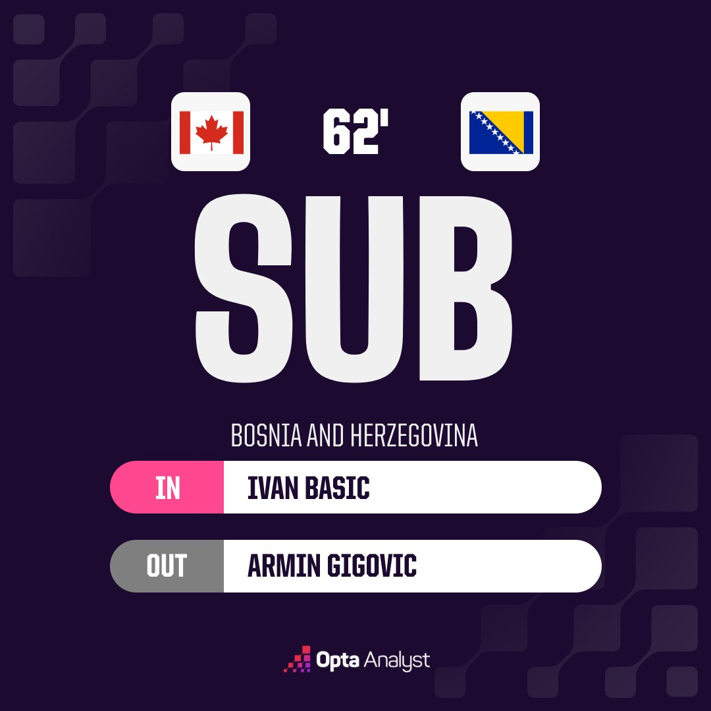
62'
The Bosnia manager is looking to the substitutes’ bench, bringing on Samed Baždar in place of Jovo Lukić. Will the change make a difference? Let’s find out!
61'
A substitution for Canada sees Tajon Buchanan replaced by Ali Ahmed. There does not appear to be any obvious sign of an injury, so that is a tactical switch.
61'
A substitution for Canada sees Jonathan David replaced by Promise David. There does not appear to be any obvious sign of an injury, so that is a tactical switch.
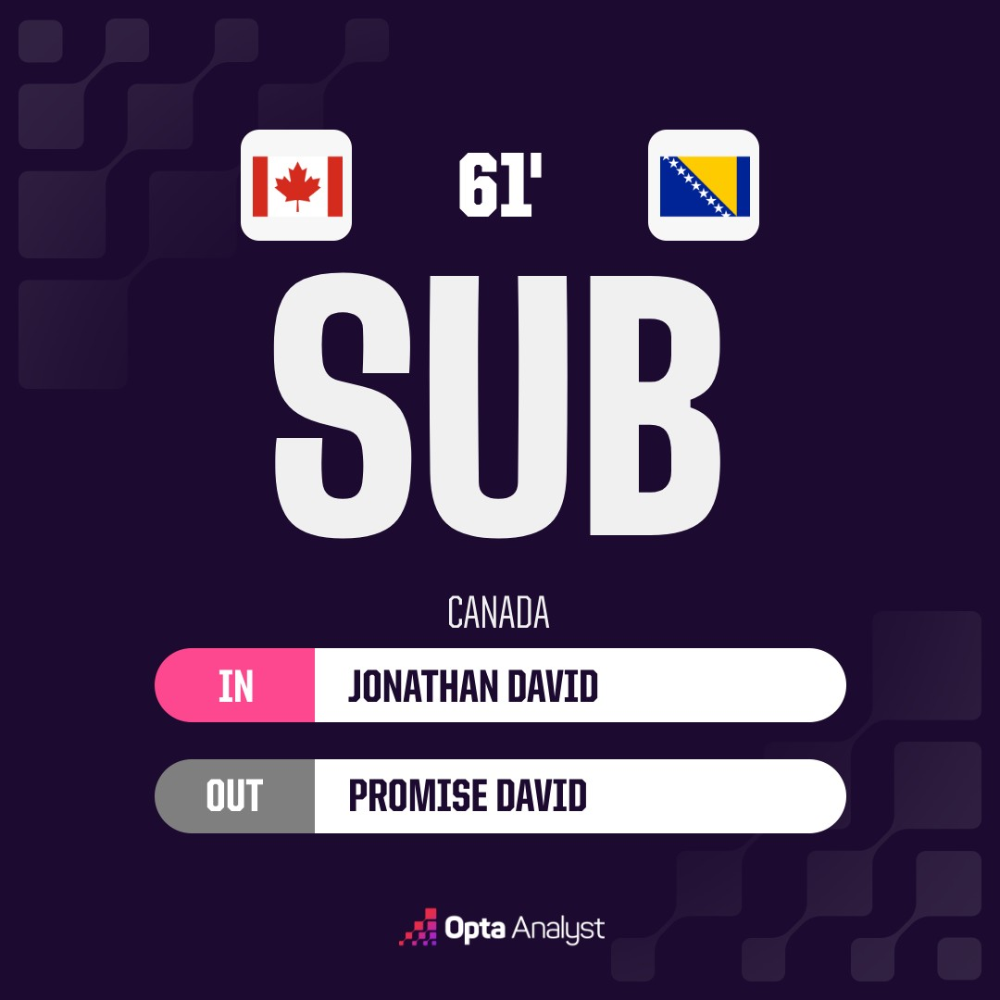
61'
Liam Millar’s match is over as Canada decide to make a substitution. Jacob Shaffelburg enters the field in what looks like a tactical change.
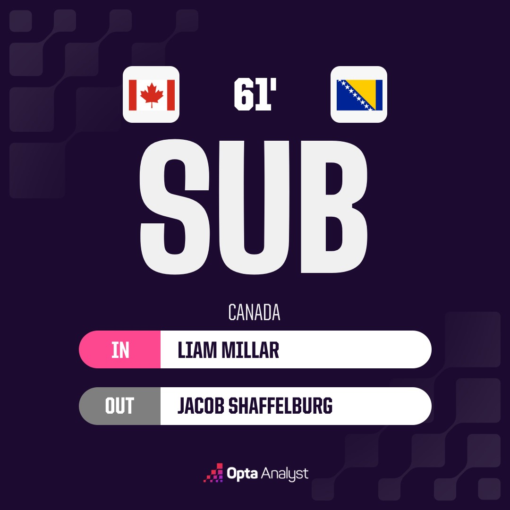
60'
Despite trailing, Canada are showing real defensive grit, digging in and stopping further damage as they try to build a platform.
59'
A chance goes begging as Tarik Muharemović gets off a shot that does not hit the target. They might have done better with that one, but instead it is a goal-kick to Canada.
58'
A free-kick to Bosnia, as Stephen Eustaquio goes in and fouls Benjamin Tahirović. However, Canada will not mind giving one away in this area too much, with plenty of distance to their goal.
53'
BOOKING! Yellow card for Luc De Fougerolles, who is penalised for a foul. The referee waves away their remonstrations, and now they will have to be careful.
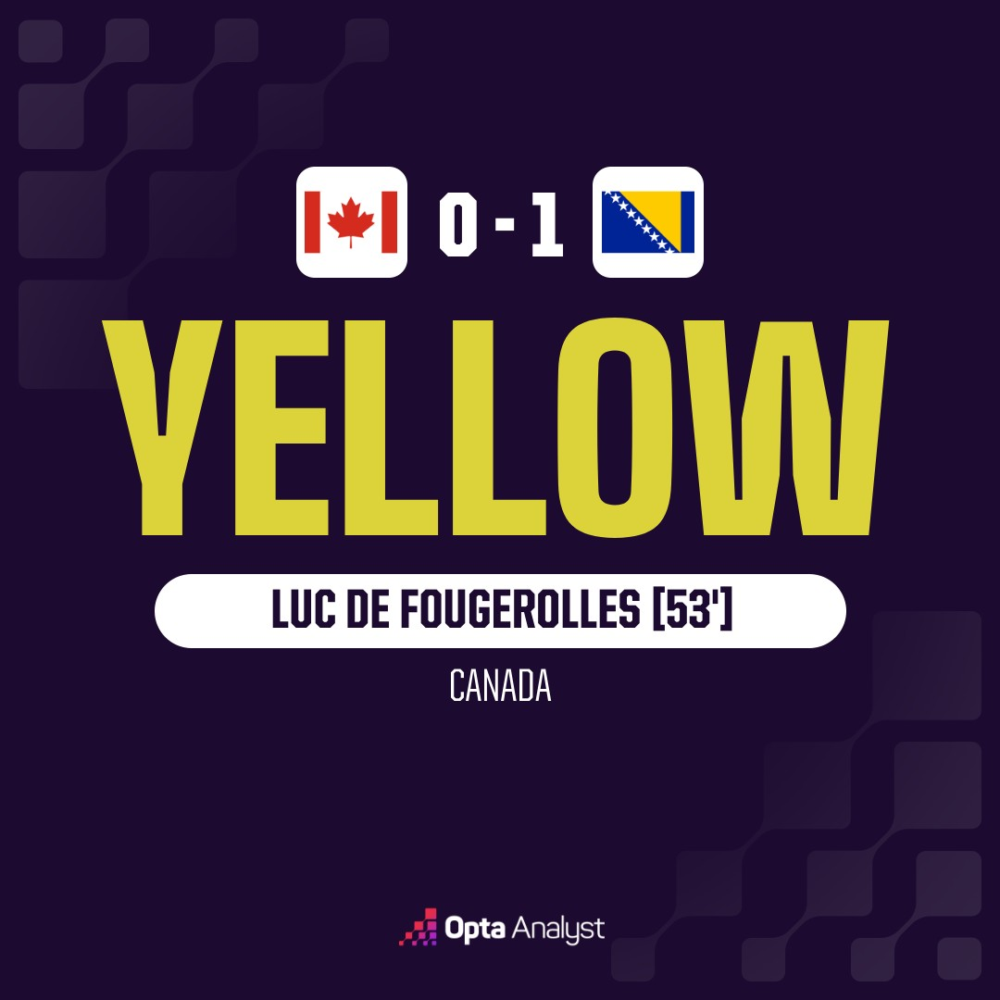
53'
A free-kick to Bosnia, as Luc De Fougerolles goes in and fouls Ermedin Demirović. However, Canada will not mind giving one away in this area too much, with plenty of distance to their goal.
53'
WHAT A MISS! Oh dear, oh dear, that is an awful attempt from Richie Laryea, as a huge chance for Canada to score the goal they need goes begging. What a let off for Bosnia, though. They will have to defend better than that from here on out!
53'
Ivan Bašić goes in on Stephen Eustaquio and concedes a foul. The free-kick is not in a particularly dangerous area from Bosnia’s viewpoint, though.
52'
Excellent defensive work from Bosnia; their organization and success in key duels are effectively safeguarding their lead.
51'
In the last 15 minutes, it is Canada who have dominated the ball, having seen 68.10% of the possession, yet they have not been able to go and turn that into a goal just yet, with their opponents standing firm.
51'
Ermedin Demirović goes in on Luc De Fougerolles and concedes a foul. The free-kick is not in a particularly dangerous area from Bosnia’s viewpoint, though.
49'
No luck – it’s offside! Tani Oluwaseyi looked to dart in behind and get on the end of a pass, yet they just went too early, and the flag is up to signal offside.
46'
Free-kick! A foul from Nikola Katić on Tani Oluwaseyi. It is well away from Bosnia’s goal, so it is unlikely to result in a chance for Canada.
46'
That was hopeful! A bit of a punt from Ermedin Demirović, who goes for goal from distance, but Maxime Crépeau makes the save.
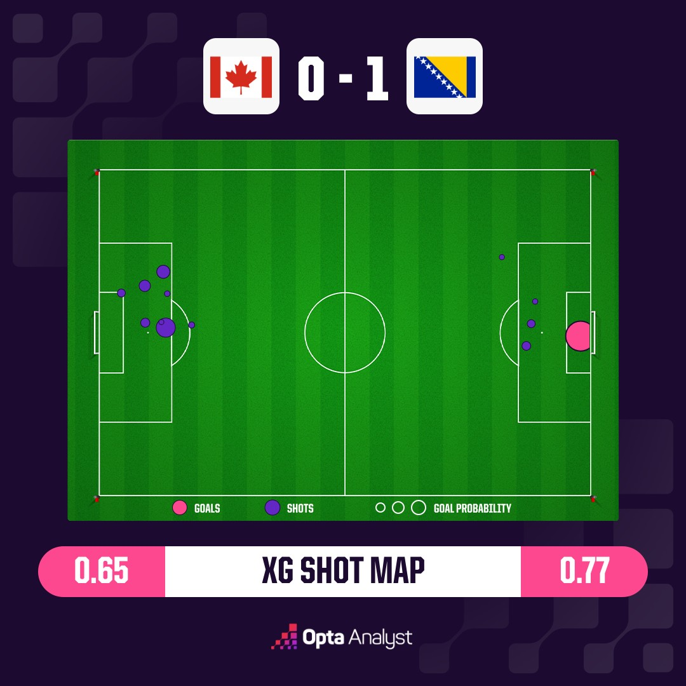
45+5'
Half-time! We reach the interval at Toronto Stadium and it is Bosnia who have a 0-1 lead over Canada. Can they hold on and see this out in the second half?
45+4'
MISS! A shot from Derek Cornelius ends up being off target. They might have done a bit better with that one, but it remains Canada 0-1 Bosnia.
45+3'
CORNER! The pressure is building for Canada as they win a set-piece after Alistair Johnston's attempt is blocked by Sead Kolašinac and diverted out of play.
45+1'
The referee goes to their pocket and pulls out a yellow card, which is brandished in the direction of Jovo Lukić. Will they be able to avoid a second booking?
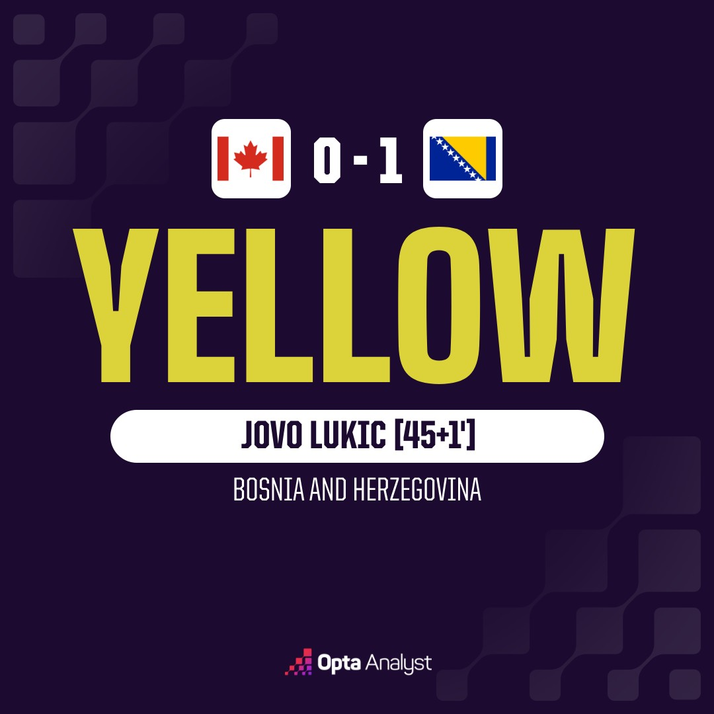
45+1'
A foul from Jovo Lukić on Tajon Buchanan sees Canada win a free-kick, but it is not in a dangerous position, so Bosnia should be confident they can defend it easily enough.
45+1'
Excellent defensive work from Bosnia; their organization and success in key duels are effectively safeguarding their lead.
45+1'
Despite trailing, Canada are showing real defensive grit, digging in and stopping further damage as they try to build a platform.
45+1'
That is a booking for Ermedin Demirović, who has received their first yellow card. They are not happy with the decision, but it is done now, and they will have to be careful for the rest of this game.
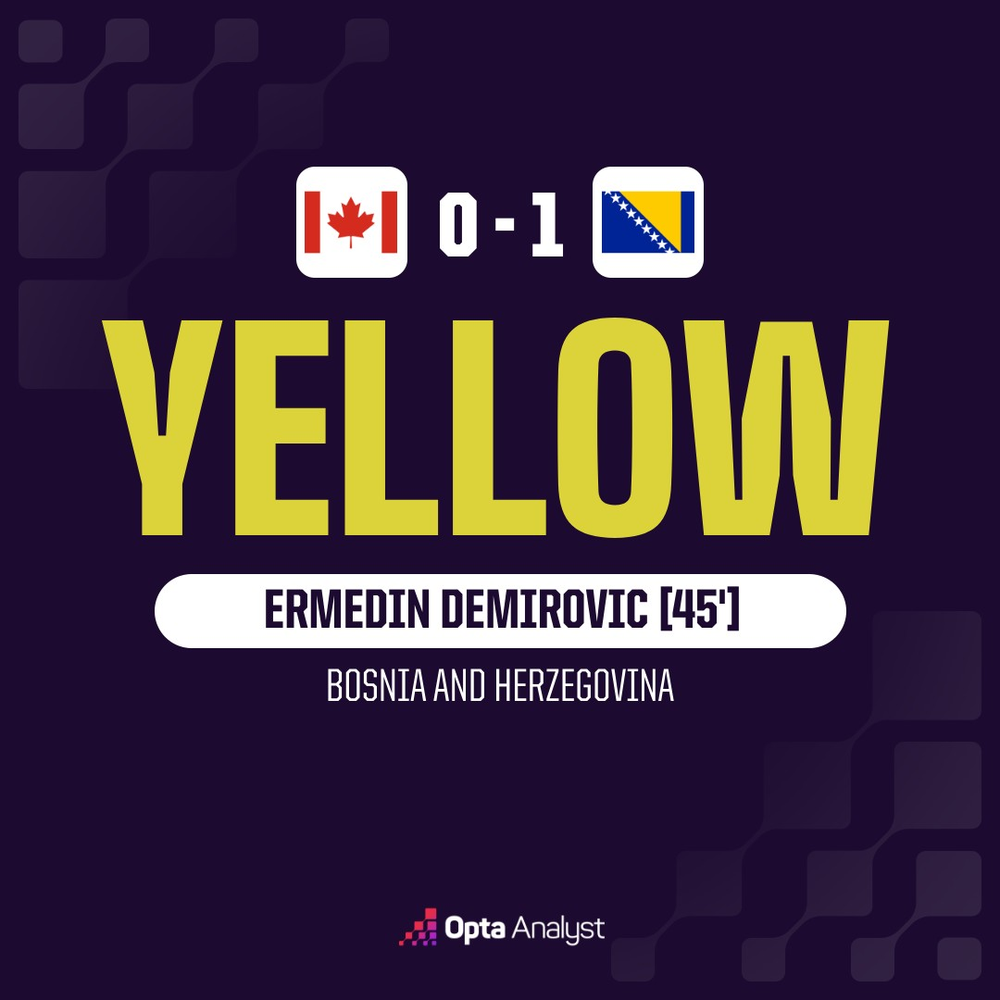
44'
A rash challenge from Ermedin Demirović, who sends Derek Cornelius tumbling, giving Canada a free-kick. It is not in a threatening position, but it gives them a chance to get back on the ball.
44'
That is a disappointing effort from Benjamin Tahirović, who went for glory but got their attempt wrong, and the shot sailed off target. A frustrating moment for Bosnia.
42'
A rash challenge from Amar Memić, who sends Alistair Johnston tumbling, giving Canada a free-kick. It is not in a threatening position, but it gives them a chance to get back on the ball.
41'
Free-kick! A foul from Amar Dedić on Luc De Fougerolles. It is well away from Bosnia’s goal, so it is unlikely to result in a chance for Canada.
40'
Corner! Canada are pushing for a goal and now they have an opportunity from this set-piece.
39'
It is a corner now to Canada, with Bosnia somewhat hanging on here as they look to hold out for a positive result. Can Canada make something of this set-piece opportunity?
39'
Set-piece after set-piece - Canada are turning up the pressure as they search for a breakthrough.
38'
Great defending from Bosnia, who are staying organised and winning key battles to preserve their lead.
38'
Corner! The ball goes behind and now Canada will aim to deliver a good ball into the penalty area and test that Bosnia defence, which has been frustrating them in recent minutes.
38'
No luck! Jonathan David takes on a shot that, had they got it right, might have been set to test the goalkeeper, but instead it is sent off target and Bosnia come away unscathed.
37'
A chance now for Canada to get a good delivery into the box, after the ball is diverted behind for a corner. Canada have been pushing for what would be a key goal, but Bosnia have stood firm so far.
36'
In the last 15 minutes, it is Canada who have dominated the ball, having seen 81.08% of the possession, yet they have not been able to go and turn that into a goal just yet, with their opponents standing firm.
35'
Despite trailing, Canada are showing real defensive grit, digging in and stopping further damage as they try to build a platform.
34'
Corner! Canada are pushing for a goal and now they have an opportunity from this set-piece.
33'
Great defending from Bosnia, who are staying organised and winning key battles to preserve their lead.
32'
MISS! A shot from Tani Oluwaseyi ends up being off target. They might have done a bit better with that one, but it remains Canada 0-1 Bosnia.
30'
Great block from Amar Dedić, as they get in the way of an attempt from Ismaël Koné that might have been set to cause the goalkeeper some problems. Solid defending from the Bosnia player.
29'
Can Canada make this chance count? They have won a free-kick in a threatening position after a foul from Tarik Muharemović on Jonathan David. Will Bosnia's defence be tested here?
29'
Canada are racking up corners and free-kicks - they’re starting to dominate in dangerous areas.
28'
A chance now for Canada to get a good delivery into the box, after the ball is diverted behind for a corner. Canada have been pushing for what would be a key goal, but Bosnia have stood firm so far.
28'
Strong early signals from Bosnia at the back — calm and commanding as they break up attacks with ease.
28'
BLOCKED! That was close. Jonathan David got off a shot, which was heading in, but Nikola Katić was on hand to make a vital intervention. Great block!
27'
Good play from Tajon Buchanan, who draws a foul from Sead Kolašinac to hand Canada a free-kick in a dangerous position. Will they create something from this set-piece?
23'
A free-kick to Canada, as Ermedin Demirović goes in and fouls Luc De Fougerolles. However, Bosnia will not mind giving one away in this area too much, with plenty of distance to their goal.
21'
GOAL! The drama continues as Bosnia-Herzegovina take the lead, courtesy of a goal from Jovo Lukić. There is still plenty of time remaining for more potential twists and turns, but as things stand Bosnia are on track for victory.
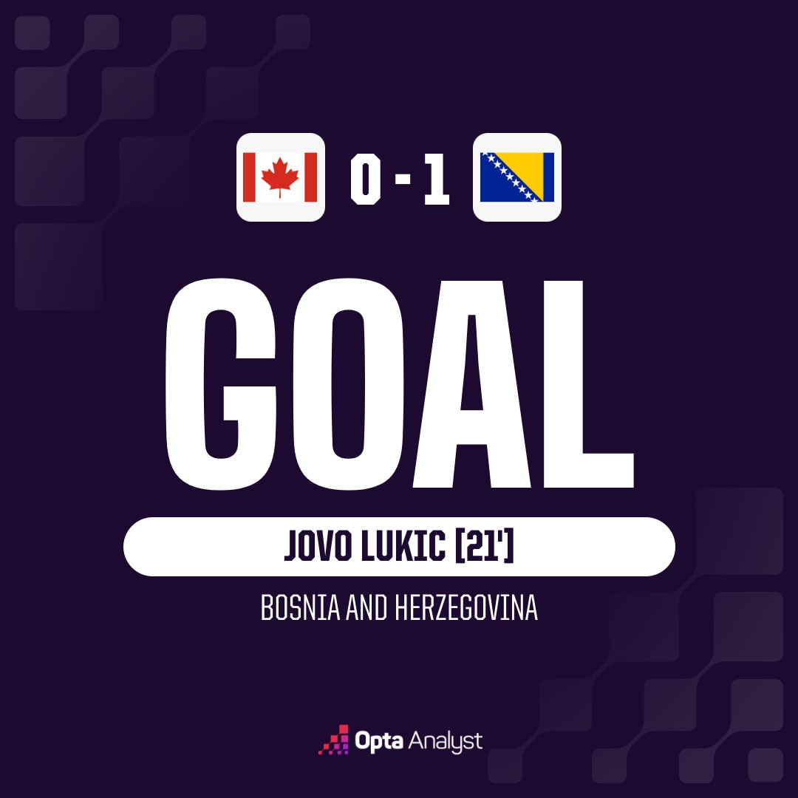
19'
Free-kick! A foul from Stephen Eustaquio on Esmir Bajraktarević. It is well away from Canada’s goal, so it is unlikely to result in a chance for Bosnia.
17'
Ivan Bašić goes in on Ismaël Koné and concedes a foul. The free-kick is not in a particularly dangerous area from Bosnia’s viewpoint, though.
17'
WHAT A MISS! Oh dear, oh dear, that is an awful attempt from Jonathan David, as a huge chance for Canada to score the goal they need goes begging. What a let off for Bosnia, though. They will have to defend better than that from here on out!
14'
A chance now for Canada to get a good delivery into the box, after the ball is diverted behind for a corner. Canada have been pushing for what would be a key goal, but Bosnia have stood firm so far.
13'
CLOSE! Jovo Lukić gets into a decent shooting position inside the Canada area, and manages to find space to get an effort off. However, Maxime Crépeau is equal to it.
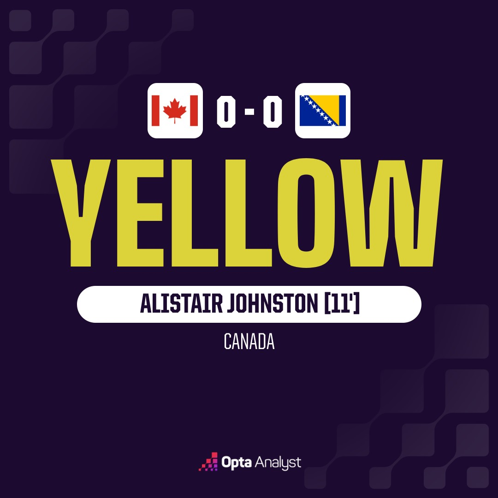
11'
The referee goes to their pocket and pulls out a yellow card, which is brandished in the direction of Alistair Johnston. Will they be able to avoid a second booking?
11'
Alistair Johnston goes in on Amar Memić and concedes a foul. The free-kick is not in a particularly dangerous area from Canada’s viewpoint, though.
5'
MISS! The score remains 0-0, with Canada relieved after Bosnia’s Jovo Lukić goes for goal but sends their attempt off target. Not one to write home about, that one.
5'
Liam Millar goes in on Amar Dedić and concedes a foul. The free-kick is not in a particularly dangerous area from Canada’s viewpoint, though.
4'
It’s been tight so far, and Bosnia are making sure it stays that way with strong defensive discipline and well-timed clearances.
3'
No luck! Amar Memić takes on a shot that, had they got it right, might have been set to test the goalkeeper, but instead it is sent off target and Canada come away unscathed.
2'
Good play from Sead Kolašinac, who draws a foul from Alistair Johnston to hand Bosnia a free-kick in a dangerous position. Will they create something from this set-piece?
1'
Can Bosnia survive here? They will have some defending to do after the ball is turned behind for a corner kick. Will Canada take this opportunity and grab the goal they have been pushing for?
1'
And we are off! Strap in, folks, for this mouthwatering encounter between Canada and Bosnia-Herzegovina at Toronto Stadium.
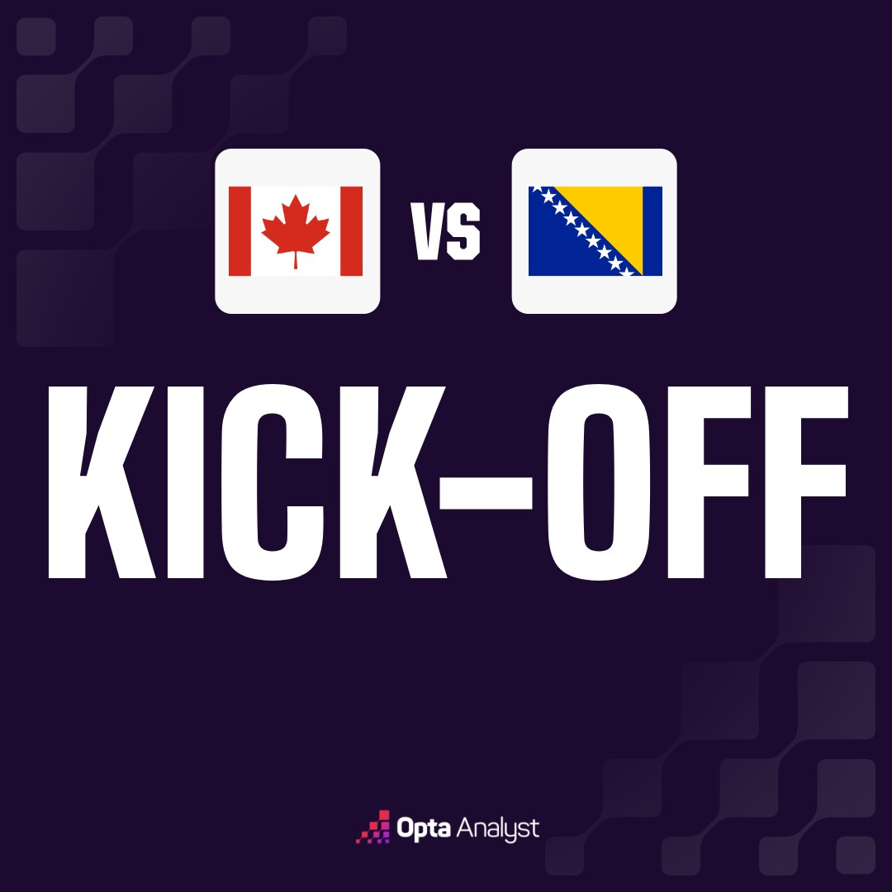
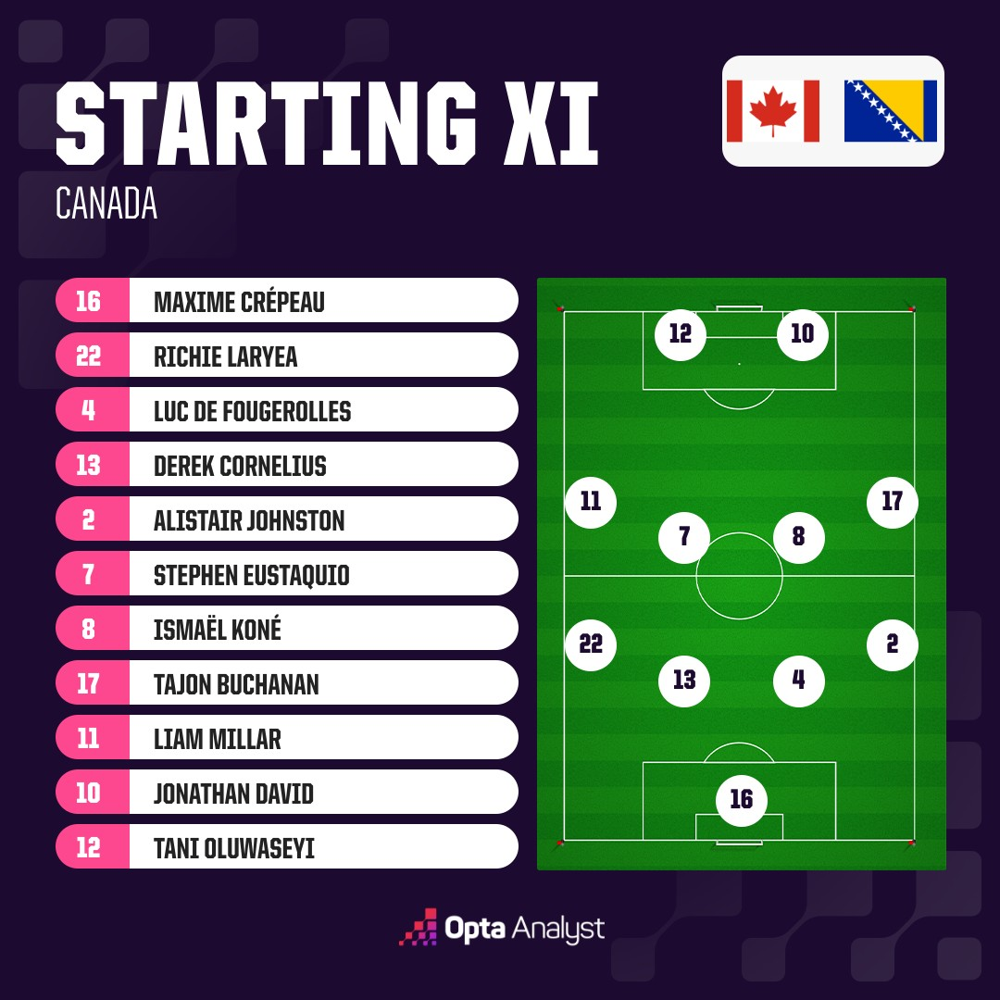
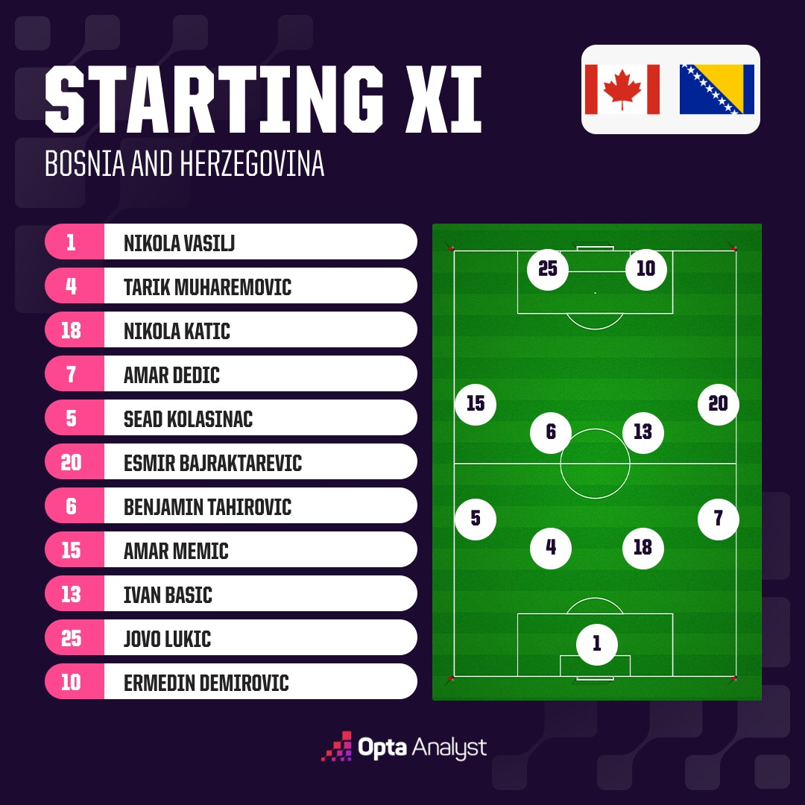
Both teams have scored in Bosnia-Herzegovina's last 6 games
Bosnia-Herzegovina have drawn their last 3 matches in a row
Bosnia-Herzegovina have drawn their last 3 away matches in a row
Two teams in the midst of an eight-match unbeaten streak face off on Friday at Toronto Stadium in Toronto, Ontario as Canada play Bosnia-Herzegovina in the FIFA World Cup group stage.
Both sides are playing their first match of the competition. Canada played out a 1-1 draw in their last match, a June 5 friendly against the Republic of Ireland at Stade Saputo, extending their unbeaten streak to eight games in all competitions.
Bosnia played out a 1-1 draw against Panama in their last game, a June 6 friendly at Energizer Park, improving their unbeaten streak to eight games in all competitions. Nikola Katic was on the scoresheet in the draw.
Jonathan David has caught the eye this year for Canada. He leads the side with two goals. Bosnia's leading lights in attack this year have been Katic, Edin Dzeko, and Haris Tabakovic, who have each netted once.
In their last six matches in all competitions, Canada have won three and drawn three. The Canadian side scored eight and conceded three in that period, scoring first in four of the six contests. They had two first-half goals, while their opponents netted two times in the first 45 minutes. The Bosnian side have won one and drawn five in their last six. The Bosnian side scored seven and conceded five in that stretch, netting first in two of the six. They had two goals in the first half, while their opponents netted three times before the break.
-
General
Possession 61.1% 61.10338.89738.9% Possession lost in defensive half 29 294848 Possession lost in middle third 69 696666 Duels 149 149149149 Duels success rate 46.3% 46.30953.69153.7% Aerial duels 63 636363 Aerial duels won 30.2% 30.15969.84169.8% Successful dribbles 7 755 Fouls won 20 201010 Offsides 1 100 Corner awarded 9 944 -
Distribution
Passes 417 417269269 Long passes 43 436262 Long passes proportion (%) 10.3% 10.31223.04823.0% Passing accuracy 74.3% 74.34163.94163.9% Passes in opponents' half 265 265159159 Passing accuracy in opponents' half (%) 70.2% 70.18951.57251.6% Total passes in the final third 167 1677878 Passing accuracy in final third (%) 63.5% 63.47344.87244.9% Forward passes 290 290181181 Forward passes (%) 69.5% 69.54467.28667.3% Through balls 2 200 Final third entries 76 765959 Penalty area entries 49 491919 Total open play crosses 16 1644 Crosses 24 241010 Crossing accuracy 20.8% 20.8336060.0% -
Attack
Goals 1 111 Shots 13 1388 Shots on target 4 433 Blocked shots 4 411 Headed shots 2 244 Shots outside the box 3 333 Shots inside the box 10 1055 Shots accuracy excluding blocked shots 44.4% 44.44442.85742.9% Shooting accuracy 30.8% 30.76937.537.5% Key Passes 12 1255 -
Defence
Tackles 23 232121 Tackles success rate 65.2% 65.21761.90561.9% Clearances 21 217171 Interceptions 4 41010 Recoveries 50 505454 Attacking third recovery 4 455 Defensive third recovery 27 272828 Midfield third recovery 19 192121 Recoveries in attacking half (%) 8.0% 89.2599.3% -
Discipline
Fouls conceded 10 102020 Yellow cards 2 233 Red cards 0 000